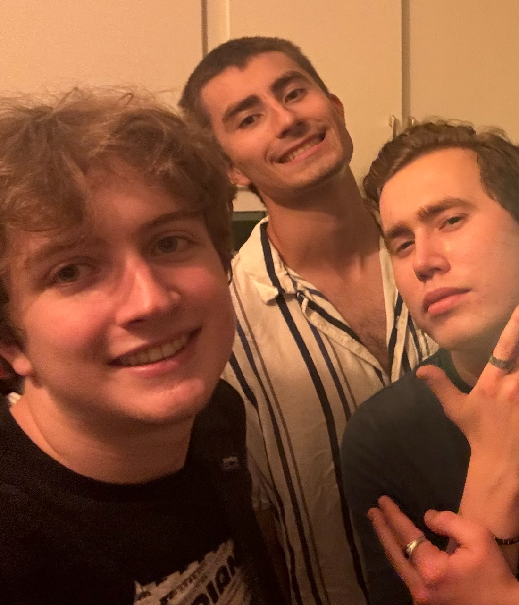

William Hoffman
Junior at Indiana University Bloomington Luddy School of Informatics, Computing and Engineering

I am in my fifth semester at Indiana University and am currently studying computing fundementals.
I am working with Teach IT to inspire the next generation.
Last semester I focused on giving STEM related presentations to the youth in Bloomington!
My goal was to share the wonders of technology in an accessible way.
This semester I will be working on creating and managing websites for non-profits. I am very excited to help the community with my skills.